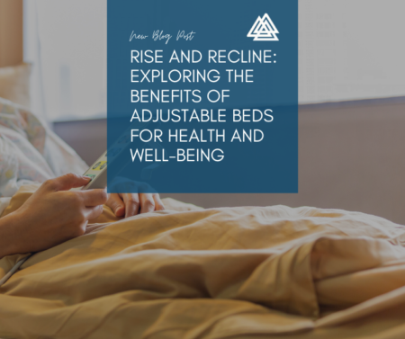

Prism Post
 Respiratory syncytial virus (RSV) is a common respiratory virus that poses a significant threat, particularly to infants, young children, and older adults. While often associated with winter, RSV is a year-round concern that requires attention even during the summer months. Understanding RSV and taking appropriate precautions can help protect vulnerable populations and reduce the risk of severe illness.
Respiratory syncytial virus (RSV) is a common respiratory virus that poses a significant threat, particularly to infants, young children, and older adults. While often associated with winter, RSV is a year-round concern that requires attention even during the summer months. Understanding RSV and taking appropriate precautions can help protect vulnerable populations and reduce the risk of severe illness.
What is RSV?
RSV is a highly contagious virus that infects the respiratory tract, leading to infections of the lungs and breathing passages. It is a major cause of respiratory illness in young children, often resulting in bronchiolitis (inflammation of the small airways in the lung) and pneumonia. Older adults and individuals with weakened immune systems are also at high risk of severe RSV infection.
Symptoms of RSV
RSV symptoms can range from mild to severe and typically appear 4 to 6 days after exposure. Common symptoms include:
- Runny nose
- Decrease in appetite
- Coughing
- Sneezing
- Fever
- Wheezing
In severe cases, especially in infants, RSV can lead to difficulty breathing, dehydration, and a decrease in oxygen levels, requiring hospitalization.
Why RSV is a Year-Round Threat
While RSV activity is traditionally higher in the fall and winter, the virus does not disappear in the warmer months. Factors contributing to its year-round presence include:
- Viral Adaptability: RSV can survive in various environments and is not limited by seasonal changes.
- Indoor Crowding: Summer activities like summer camps, daycare, and family gatherings can facilitate the spread of RSV.
- Global Travel: Increased travel during the summer months can introduce RSV into new communities, maintaining its presence year-round.
- Weaker Immune Systems: Seasonal allergies and other summer illnesses can weaken the immune system, making individuals more susceptible to RSV.
Summer Precautions to Prevent RSV
Taking precautions during the summer is crucial to prevent the spread of RSV, especially in high-risk groups. Here are some effective strategies:
- Practice Good Hygiene: Regular handwashing with soap and water for at least 20 seconds is one of the most effective ways to prevent the spread of RSV. Use hand sanitizer when soap and water are not available.
- Avoid Close Contact: Limit close contact with individuals who are showing symptoms of a respiratory illness. This includes avoiding sharing utensils, cups, and towels.
- Clean and Disinfect: Regularly clean and disinfect frequently touched surfaces such as doorknobs, light switches, and toys.
- Stay Home When Sick: If you or your child are showing symptoms of RSV, stay home to avoid spreading the virus to others. Keep sick children out of daycare and summer camps.
- Wear Masks: In crowded indoor settings, consider wearing masks to reduce the transmission of respiratory viruses, including RSV.
- Boost Immune Health: Maintain a healthy diet, stay hydrated, and get adequate sleep to support a strong immune system. Consider discussing with your healthcare provider about additional supplements that may help.
- Vaccination: Stay informed about any RSV vaccines that may be available, particularly for high-risk groups. Some vaccines are in development and may offer additional protection in the future.
Recognizing Severe RSV and Seeking Medical Help
Early recognition of severe RSV symptoms can be critical in preventing serious health complications. Seek medical attention if you or your child experience:
- Difficulty breathing
- Rapid breathing or wheezing
- Bluish color around the mouth or fingernails
- High fever
- Dehydration (less urine output, dry mouth, no tears when crying)
RSV is a year-round threat that requires vigilance and proactive measures, even during the summer months. By understanding the risks and implementing effective precautions, we can protect vulnerable populations and reduce the spread of this potentially severe virus. Prioritize good hygiene, avoid close contact with sick individuals, and maintain a healthy lifestyle to keep RSV at bay. Stay informed about developments in RSV prevention and treatment, and don't hesitate to seek medical help if severe symptoms arise.
 In today's financial landscape, credit scores play a pivotal role in determining our ability to secure loans, credit cards, and even housing. While the tangible benefits of a good credit score are well-known, the impact of credit wellness extends beyond financial security. Improving your credit can significantly boost your mental health and strengthen relationships, leading to a more fulfilling and stress-free life. Let's explore how taking control of your credit can enhance your overall well-being.
In today's financial landscape, credit scores play a pivotal role in determining our ability to secure loans, credit cards, and even housing. While the tangible benefits of a good credit score are well-known, the impact of credit wellness extends beyond financial security. Improving your credit can significantly boost your mental health and strengthen relationships, leading to a more fulfilling and stress-free life. Let's explore how taking control of your credit can enhance your overall well-being.
The Connection Between Credit and Mental Health
Financial stress is a major contributor to anxiety and depression. Worrying about bills, debt, and credit scores can create a persistent undercurrent of stress that affects every aspect of life. Here's how improving your credit can alleviate this burden and enhance mental health:
- Reduced Stress and Anxiety: A poor credit score often leads to high-interest rates, limited financial options, and constant worry about debt. Improving your credit can reduce these financial pressures, leading to a more relaxed and stable mental state.
- Increased Financial Confidence: As your credit score improves, you gain greater control over your financial situation. This confidence can translate into a more positive outlook on life, reducing feelings of helplessness and uncertainty.
- Enhanced Sense of Achievement: Taking proactive steps to improve your credit, such as paying off debts and managing bills, fosters a sense of accomplishment. This can boost self-esteem and overall mental well-being.
Strengthening Relationships Through Credit Wellness
Financial issues are a common source of tension in relationships. Whether it's with a partner, family, or friends, improving your credit can lead to healthier and more harmonious interactions:
- Improved Communication: Addressing credit and financial issues requires open and honest communication. This can strengthen trust and understanding between partners, fostering a supportive environment.
- Shared Financial Goals: Working together to improve credit scores can unite couples in a shared mission. Setting financial goals and celebrating milestones together can strengthen the bond and create a sense of teamwork.
- Reduced Conflict: Financial struggles often lead to arguments and resentment. By improving your credit and achieving greater financial stability, you can reduce the sources of conflict, leading to a more peaceful and loving relationship.
- Enhanced Future Planning: Good credit opens up opportunities for significant life decisions, such as buying a home or starting a business. Having a solid financial foundation can make planning for the future together more exciting and less stressful.
Practical Steps to Improve Credit Wellness
Improving your credit is a journey that requires dedication and strategic planning. Here are some practical steps to get you started:
- Check Your Credit Report: Obtain a free copy of your credit report from the major credit bureaus. Review it for any errors or discrepancies and dispute any inaccuracies.
- Pay Bills on Time: Consistently paying bills on time is one of the most critical factors in improving your credit score. Set up automatic payments or reminders to ensure timely payments.
- Reduce Debt: Focus on paying down high-interest debts first. Create a budget to manage expenses and allocate extra funds towards debt repayment.
- Limit New Credit Applications: Each credit inquiry can temporarily lower your credit score. Avoid applying for multiple new credit accounts in a short period.
- Use Credit Wisely: Maintain a low credit utilization ratio by keeping your credit card balances below 30% of your available credit limit. This shows lenders that you are responsible with credit.
- Seek Professional Help: If you're struggling with debt, consider seeking help from a credit counseling service. They can provide guidance and create a debt management plan tailored to your situation.
Credit wellness is not just about financial stability; it's a pathway to better mental health and stronger relationships. By taking control of your credit, you can reduce stress, build confidence, and create a more harmonious and supportive environment for yourself and your loved ones. Remember, improving your credit is a journey that requires patience and persistence, but the rewards extend far beyond your wallet. Embrace the process and enjoy the positive ripple effects it brings to your life.
 Hidradenitis suppurativa (HS) is a chronic skin condition that can be as challenging to pronounce as it is to live with. It affects approximately 1-4% of the global population, yet it remains relatively unknown and often misunderstood. This blog aims to demystify HS by providing an in-depth understanding of the condition, offering coping strategies, and highlighting ways to thrive despite its challenges.
Hidradenitis suppurativa (HS) is a chronic skin condition that can be as challenging to pronounce as it is to live with. It affects approximately 1-4% of the global population, yet it remains relatively unknown and often misunderstood. This blog aims to demystify HS by providing an in-depth understanding of the condition, offering coping strategies, and highlighting ways to thrive despite its challenges.
What is Hidradenitis Suppurativa?
Hidradenitis suppurativa is a long-term skin disease characterized by recurrent, painful lumps under the skin. These lumps, often referred to as nodules, can break open and leak pus, leading to tunnels under the skin (sinus tracts) and scarring. HS commonly affects areas of the body where skin rubs together, such as the armpits, groin, buttocks, and under the breasts.
Symptoms and Stages
The symptoms of HS vary widely among individuals but typically include:
- Painful lumps: These may start as pea-sized nodules that can enlarge and become more painful.
- Abscesses: The lumps can break open and release a foul-smelling discharge.
- Sinus tracts: Over time, tunnels can form under the skin, connecting different lumps.
- Scarring: Chronic HS can lead to significant scarring and skin changes.
HS is categorized into three stages, known as Hurley stages:
- Hurley Stage I: Single or multiple abscesses without sinus tracts and scarring.
- Hurley Stage II: Recurrent abscesses with sinus tracts and scarring, widely separated.
- Hurley Stage III: Diffuse or near-diffuse involvement with multiple interconnected sinus tracts and abscesses across an entire area.
Causes and Risk Factors
The exact cause of HS is not fully understood, but it is believed to involve a combination of genetic, environmental, and immune factors. Risk factors that may increase the likelihood of developing HS include:
- Genetics: A family history of HS can increase the risk.
- Obesity: Being overweight can exacerbate the condition.
- Smoking: Tobacco use is associated with a higher risk of HS.
- Hormones: HS often begins after puberty and can worsen with hormonal changes.
Coping with Hidradenitis Suppurativa
Living with HS can be challenging, but there are strategies to manage the condition and improve quality of life.
- Medical Treatment: Consult with a dermatologist to develop a personalized treatment plan. Options may include antibiotics, anti-inflammatory medications, hormonal therapy, and biologics.
- Skin Care: Keep affected areas clean and dry. Use gentle, non-irritating cleansers and avoid tight clothing that can cause friction.
- Lifestyle Changes: Maintaining a healthy weight and quitting smoking can significantly impact the severity of HS. Consider a balanced diet rich in anti-inflammatory foods.
- Pain Management: Over-the-counter pain relievers can help manage pain. In some cases, your doctor may prescribe stronger medications.
- Mental Health Support: HS can take a toll on mental health. Seeking support from a therapist or support group can be beneficial.
Thriving with Hidradenitis Suppurativa
While HS is a chronic condition, many individuals find ways to thrive and lead fulfilling lives. Here are some tips to help you thrive despite HS:
- Stay Informed: Educate yourself about HS and stay updated on new treatments and research.
- Advocate for Yourself: Be proactive in your healthcare. Don't hesitate to seek second opinions or change providers if you feel your needs aren't being met.
- Build a Support Network: Connect with others who have HS through online communities or local support groups. Sharing experiences and tips can be incredibly empowering.
- Focus on Holistic Health: Prioritize overall well-being by incorporating stress-reduction techniques, regular exercise, and a balanced diet into your routine.
- Celebrate Small Victories: Managing HS is a journey with ups and downs. Celebrate the small victories and progress you make along the way.
Hidradenitis suppurativa is a complex and often misunderstood condition, but understanding it better can help demystify the challenges it presents. By adopting effective coping strategies and focusing on holistic well-being, it is possible to thrive despite HS. Remember, you are not alone—there is a community of support and resources available to help you navigate this journey.
 Peri-menopause marks a significant and often challenging phase in a woman’s life, signaling the transition towards menopause. This period, which can span several years before menopause itself, is characterized by fluctuating hormone levels that give rise to a range of physical, emotional, and cognitive symptoms. Understanding these symptoms and their potential impact on daily life is crucial for women approaching or experiencing peri-menopause.
Peri-menopause marks a significant and often challenging phase in a woman’s life, signaling the transition towards menopause. This period, which can span several years before menopause itself, is characterized by fluctuating hormone levels that give rise to a range of physical, emotional, and cognitive symptoms. Understanding these symptoms and their potential impact on daily life is crucial for women approaching or experiencing peri-menopause.
Understanding Peri-menopause Symptoms
- Irregular Menstrual Cycles: One of the first signs of peri-menopause is changes in menstrual patterns. Periods may become irregular—shorter or longer in duration, lighter or heavier in flow, or occurring more or less frequently than usual.
- Hot Flashes and Night Sweats: Sudden, intense feelings of heat, often accompanied by sweating, are common during peri-menopause. These hot flashes can occur multiple times a day and disrupt sleep, leading to fatigue and irritability.
- Mood Swings and Emotional Changes: Hormonal fluctuations can affect mood stability, leading to mood swings, irritability, anxiety, and even depression. Emotional responses may become more intense and unpredictable.
- Sleep Disturbances: Changes in hormone levels can interfere with sleep quality, causing difficulty falling asleep, staying asleep, or experiencing restful sleep. Night sweats associated with hot flashes can exacerbate sleep disturbances.
- Physical Symptoms: Other physical symptoms may include vaginal dryness, decreased libido, headaches, joint and muscle pain, digestive issues, and changes in weight distribution.
Impact on Daily Life
The symptoms of peri-menopause can significantly impact various aspects of daily life:
- Work and Productivity: Concentration, focus, and productivity may be affected due to sleep disturbances, mood swings, and fatigue.
- Relationships: Emotional changes and physical symptoms can strain relationships with partners, family members, and colleagues. Effective communication and understanding are essential during this period.
- Physical Activity: Symptoms such as joint pain, fatigue, and changes in energy levels may affect exercise routines. Finding enjoyable and manageable activities is important for maintaining physical health.
- Self-Care: Prioritizing self-care becomes crucial. This includes adopting a healthy diet, staying hydrated, managing stress through relaxation techniques, and seeking medical advice when needed.
Coping Strategies and Support
- Education and Awareness: Learning about peri-menopause and its symptoms can help women recognize what they are experiencing as normal and empower them to seek appropriate support and treatment.
- Healthy Lifestyle Choices: Making lifestyle adjustments such as eating a balanced diet, reducing caffeine and alcohol intake, staying physically active, and practicing stress-reduction techniques can help manage symptoms.
- Medical Support: Consulting with a healthcare provider about peri-menopausal symptoms is important. They can provide guidance on managing symptoms, recommend treatments such as hormone therapy or alternative therapies, and monitor overall health.
- Support Networks: Connecting with other women going through peri-menopause can provide emotional support, validation of experiences, and practical advice. Online communities, support groups, or talking with friends and family can offer valuable support.
Embracing Change and Self-Care
Navigating peri-menopause involves embracing change and prioritizing self-care. By understanding the symptoms and their potential impact on daily life, women can take proactive steps to manage their health and well-being during this transitional phase. Seeking support from healthcare professionals, maintaining open communication with loved ones, and accessing resources for emotional support are key to navigating peri-menopause with resilience and grace. Embracing self-care practices and staying informed empower women to thrive during this transformative stage of life.
 In recent years, wildfires have increasingly become a prevalent environmental concern, affecting communities around the world. Beyond the immediate destruction of homes and natural habitats, wildfires also pose significant health risks to those exposed to their smoke and aftermath. Understanding these health effects, along with preventive measures and mitigation strategies, is crucial for safeguarding public health during and after wildfire events.
In recent years, wildfires have increasingly become a prevalent environmental concern, affecting communities around the world. Beyond the immediate destruction of homes and natural habitats, wildfires also pose significant health risks to those exposed to their smoke and aftermath. Understanding these health effects, along with preventive measures and mitigation strategies, is crucial for safeguarding public health during and after wildfire events.
Health Risks Associated with Wildfires
- Respiratory Issues: The most common health effect of wildfires is respiratory problems. Smoke from burning vegetation and other materials releases harmful particles and gases, including carbon monoxide, volatile organic compounds (VOCs), and fine particulate matter (PM2.5). These pollutants can irritate the respiratory system, exacerbate asthma and other respiratory conditions, and increase the risk of respiratory infections.
- Cardiovascular Health: Fine particulate matter (PM2.5) from wildfire smoke can also penetrate deep into the lungs and enter the bloodstream, triggering cardiovascular issues such as heart attacks, strokes, and worsening of existing heart conditions.
- Eye and Skin Irritation: Wildfire smoke can cause eye irritation, redness, and discomfort. Skin exposure to smoke particles and ash may lead to irritation, itching, and exacerbation of dermatological conditions.
- Mental Health: The stress and anxiety caused by wildfires, especially when coupled with evacuation orders and property loss, can have significant impacts on mental health. Post-traumatic stress disorder (PTSD), depression, and anxiety disorders are common among individuals affected by wildfires.
Vulnerable Populations
Certain groups are more vulnerable to the health effects of wildfires:
- Children: Their developing respiratory systems make children more susceptible to respiratory illnesses caused by wildfire smoke.
- Elderly Adults: Older adults are at higher risk of cardiovascular and respiratory complications exacerbated by smoke exposure.
- Individuals with Pre-existing Conditions: Those with asthma, chronic obstructive pulmonary disease (COPD), heart disease, or diabetes are more likely to experience severe health effects from wildfire smoke.
Precautions and Mitigation Strategies
- Stay Informed: Monitor local air quality reports and wildfire updates from reliable sources, such as the Environmental Protection Agency (EPA) or local health departments.
- Limit Outdoor Activity: During periods of poor air quality, especially when smoke is visible or odor is noticeable, reduce outdoor activities and physical exertion.
- Indoor Protection: Keep windows and doors closed to prevent smoke from entering indoor spaces. Use air purifiers with HEPA filters to improve indoor air quality.
- Personal Protective Equipment: If outdoors in smoky conditions, wear N95 respirator masks to reduce inhalation of smoke particles. Cloth masks do not provide adequate protection against fine particulate matter.
- Evacuation Planning: Prepare an emergency evacuation plan and assemble a “go bag” with essential items, including medications, important documents, and supplies for pets.
Post-Wildfire Considerations
After wildfires have been contained, additional precautions may be necessary:
- Assess Property Damage: Inspect your home and surrounding areas for ash, debris, and potential hazards.
- Air Quality Testing: Test indoor air quality for lingering smoke particles and pollutants.
- Seek Medical Attention: If you experience symptoms such as difficulty breathing, chest pain, or severe irritation, seek medical attention promptly.
Wildfires are not only environmental disasters but also significant threats to public health due to the release of harmful pollutants into the air. By understanding the health risks associated with wildfires and taking proactive measures to protect ourselves and our communities, we can mitigate the impact of these natural disasters on our well-being. Stay informed, prioritize safety, and take steps to minimize exposure to wildfire smoke to safeguard your health and that of your loved ones. Together, we can build resilience and prepare for a safer future amidst the challenges posed by wildfires.
 Water workouts offer a refreshing twist to traditional exercise routines, combining the benefits of resistance training with the soothing properties of water. Whether you’re looking to beat the heat, recover from an injury, or simply diversify your fitness regimen, here are five invigorating water workouts to consider:
Water workouts offer a refreshing twist to traditional exercise routines, combining the benefits of resistance training with the soothing properties of water. Whether you’re looking to beat the heat, recover from an injury, or simply diversify your fitness regimen, here are five invigorating water workouts to consider:
- Aqua Aerobics
What is it? Aqua aerobics, or water aerobics, involves performing aerobic exercises in the shallow end of a pool. It typically includes movements like jogging in place, jumping jacks, kicks, and arm movements, all adapted to the resistance of water.
Benefits:
- Low-Impact: Reduces stress on joints and muscles, making it ideal for individuals with arthritis or recovering from injury.
- Cardiovascular Health: Improves heart and lung function through aerobic conditioning.
- Muscle Toning: Engages muscles due to water resistance, enhancing strength and endurance.
Tip: Look for aqua aerobics classes at local pools or follow online videos designed for varying fitness levels.
- Water Yoga
What is it? Water yoga adapts traditional yoga poses to the aquatic environment, often performed in the shallow or deeper sections of a pool. It incorporates breath work, flexibility exercises, and balance poses, utilizing the water’s buoyancy for support.
Benefits:
- Flexibility and Balance: Enhances flexibility and improves balance through modified yoga poses.
- Mind-Body Connection: Promotes relaxation and mindfulness, similar to traditional yoga practice.
- Joint Support: Reduces impact on joints while facilitating deeper stretches.
Tip: Consider joining a water yoga class led by a certified instructor who can guide you through proper techniques and variations.
- Deep-Water Running
What is it? Deep-water running involves wearing a buoyancy belt and running or jogging in the deep end of a pool where your feet don’t touch the bottom. The buoyancy belt keeps you afloat while you mimic the motion of running.
Benefits:
- Cardiovascular Endurance: Provides a rigorous cardiovascular workout without the impact on joints.
- Calorie Burning: Burns calories effectively due to increased resistance from water.
- Muscle Strengthening: Engages core and leg muscles to maintain stability and movement.
Tip: Start with short intervals and gradually increase your duration and intensity as you build endurance.
- Water Cycling (Aquacycling)
What is it? Aquacycling involves stationary cycling on specially designed bikes submerged in water, typically in the shallow end of a pool. It combines the benefits of cycling with the resistance of water.
Benefits:
- Lower Body Strength: Targets leg muscles, including quadriceps, hamstrings, and calves.
- Cardiovascular Fitness: Improves heart health and boosts endurance through aerobic exercise.
- Cooling Effect: Provides a refreshing workout option in warm weather.
Tip: Attend a water cycling class led by a certified instructor to learn proper bike adjustments and techniques.
- Swimming Laps
What is it? Swimming laps is a classic aquatic workout that involves moving through water using various strokes, such as freestyle, backstroke, breaststroke, and butterfly. It can be done in a traditional lap pool or designated lanes at a recreational pool.
Benefits:
- Full-Body Workout: Engages muscles throughout the body, including arms, legs, core, and back.
- Cardiovascular Conditioning: Improves cardiovascular fitness and lung capacity.
- Low-Impact: Minimizes stress on joints while providing an effective aerobic workout.
Tip: Vary your strokes and intensities to target different muscle groups and avoid monotony.
Water workouts offer a versatile and refreshing approach to fitness, catering to individuals of all fitness levels and goals. Whether you’re recovering from injury, seeking a low-impact alternative, or simply looking to shake up your exercise routine, these five water workouts provide excellent options to consider. Dive in, stay hydrated, and enjoy the unique benefits of exercising in water for improved strength, flexibility, and overall well-being.
 As hurricane season approaches, being prepared can make all the difference in ensuring safety and minimizing the impact of severe weather events. Hurricanes are powerful storms that can bring heavy rain, strong winds, storm surges, and flooding, posing significant risks to communities in their path. Whether you live in a coastal region prone to hurricanes or inland where the effects can still be felt, having a well-prepared go bag and a solid plan can help you and your loved ones stay safe during emergencies.
As hurricane season approaches, being prepared can make all the difference in ensuring safety and minimizing the impact of severe weather events. Hurricanes are powerful storms that can bring heavy rain, strong winds, storm surges, and flooding, posing significant risks to communities in their path. Whether you live in a coastal region prone to hurricanes or inland where the effects can still be felt, having a well-prepared go bag and a solid plan can help you and your loved ones stay safe during emergencies.
Understanding Hurricane Risks
Hurricanes are categorized based on their wind speed and potential for damage, ranging from Category 1 (weakest) to Category 5 (most severe). In addition to wind, hurricanes can cause extensive flooding due to heavy rainfall and storm surges, which can inundate coastal areas and penetrate inland waterways.
Creating Your Hurricane Preparedness Plan
- Stay Informed: Monitor weather forecasts and updates from trusted sources, such as the National Hurricane Center or local authorities. Understand the evacuation routes and shelter locations in your area.
- Prepare Your Home: Trim trees and secure loose objects outside. Reinforce windows and doors with storm shutters or plywood. Consider installing a generator if feasible.
- Assemble a Go Bag: A go bag, also known as an emergency kit, should contain essential items to sustain you and your family for at least 72 hours. Here's what to include:
What to Include in Your Go Bag
Basic Supplies
- Water: One gallon per person per day for drinking and sanitation.
- Non-perishable Food: Pack easy-to-open canned or packaged foods. Include a manual can opener.
- Medications: Prescription medications and basic first aid supplies.
- Flashlight and Batteries: Ensure you have extra batteries.
Personal Items
- Important Documents: Copies of identification, insurance policies, medical records, and contact information.
- Cash: Include small bills and coins in case of power outages affecting ATMs.
- Clothing and Bedding: Pack comfortable, weather-appropriate clothing and blankets.
Additional Essentials
- Personal Hygiene Items: Include toiletries such as toothbrushes, toothpaste, and hand sanitizer.
- Communication Devices: Keep a charged cell phone and charger.
- Tools and Supplies: Multi-tool, duct tape, and plastic sheeting.
Special Considerations
- Pets: Pack food, water, medications, and supplies for your pets.
- Comfort Items: Include items for children, elderly family members, or individuals with special needs.
Staying Safe During and After a Hurricane
- Evacuation: Follow evacuation orders issued by local authorities promptly.
- Sheltering: If staying home, stay indoors away from windows and doors during the storm. Be prepared to move to a safe area if flooding occurs.
- After the Storm: Avoid flooded areas and downed power lines. Use caution when inspecting your home for damage.
Hurricane preparedness is about planning ahead and having the necessary supplies and information to protect yourself and your family. By assembling a well-stocked go bag and staying informed about storm developments, you can navigate hurricane season with confidence and resilience. Remember, preparation saves lives. Take the time now to prepare so that you can weather the storm safely and recover quickly afterward.
As we approach hurricane season, use these tips and guidelines to create your hurricane preparedness plan and ensure that you are ready for whatever nature may bring. Stay safe, stay informed, and take proactive steps to protect yourself and your loved ones during this potentially challenging time.
 For individuals living with lymphedema, managing symptoms effectively is key to maintaining quality of life and promoting long-term health. Lymphedema, often stemming from lymph node removal or damage, results in swelling in the arms or legs due to lymphatic fluid buildup. While daytime compression garments are commonly used, nighttime compression therapy offers unique benefits that can significantly enhance treatment outcomes and overall well-being.
For individuals living with lymphedema, managing symptoms effectively is key to maintaining quality of life and promoting long-term health. Lymphedema, often stemming from lymph node removal or damage, results in swelling in the arms or legs due to lymphatic fluid buildup. While daytime compression garments are commonly used, nighttime compression therapy offers unique benefits that can significantly enhance treatment outcomes and overall well-being.
Understanding Lymphedema and Compression Therapy
Lymphedema is a chronic condition where the lymphatic system is impaired, leading to fluid retention and swelling in affected limbs. Compression therapy involves the use of specialized garments or wraps to apply pressure to the affected area, helping to reduce swelling, improve lymphatic flow, and prevent fluid buildup.
Benefits of Nighttime Compression Therapy
1. Continuous Pressure and Reduction of Swelling
Nighttime compression garments provide sustained pressure during periods of rest and sleep, when lymphatic drainage is naturally slower. This continuous pressure helps to reduce swelling overnight, promoting better fluid circulation and minimizing the risk of exacerbating lymphedema symptoms.
2. Improvement in Limb Size and Shape
Consistent use of nighttime compression can lead to measurable improvements in limb size and shape over time. By effectively managing fluid accumulation during the night, patients may experience reduced circumference and a more normalized appearance of the affected limb.
3. Enhanced Comfort and Rest
Many lymphedema patients report improved comfort and restfulness with nighttime compression therapy. By stabilizing the limb and reducing discomfort associated with swelling, patients can achieve better sleep quality and wake up feeling more refreshed.
4. Prevention of Fibrosis and Complications
Long-term untreated lymphedema can lead to fibrosis (thickening and hardening of tissue) and increased susceptibility to infections. Nighttime compression helps to mitigate these risks by maintaining optimal fluid balance and supporting healthy tissue function.
5. Support for Wound Healing
For patients with lymphedema-related wounds or ulcers, nighttime compression plays a crucial role in promoting healing. By reducing swelling and improving circulation, compression therapy supports the healing process and reduces the likelihood of wound complications.
Tips for Effective Nighttime Compression
- Consultation with a Specialist: Work closely with a lymphedema therapist or healthcare provider to determine the most suitable nighttime compression garment or wrap for your specific needs.
- Consistent Wear: Establish a routine of wearing nighttime compression consistently to maximize its benefits. Follow the recommended guidelines provided by your healthcare team.
- Skin Care: Maintain good skin hygiene and moisturize regularly to prevent irritation or skin breakdown underneath compression garments.
Nighttime compression therapy represents a valuable adjunct to daytime management strategies for lymphedema patients. By harnessing the benefits of continuous pressure during sleep, individuals can achieve improved symptom control, enhanced quality of life, and better long-term outcomes. As part of a comprehensive treatment plan, nighttime compression offers hope and support for those navigating the challenges of living with lymphedema.
For anyone affected by lymphedema, exploring the potential benefits of nighttime compression therapy with the guidance of healthcare professionals can be a transformative step towards better health and well-being. Embracing these supportive measures not only aids in managing symptoms but also empowers individuals to lead fulfilling and active lives despite the challenges posed by this chronic condition.
 As 2024 unfolds, the global community finds itself grappling with a resurgence of COVID-19, marked by new challenges and evolving dynamics. Among these challenges is the phenomenon of recurrent infections, where individuals experience COVID-19 more than once. This scenario raises significant health implications and underscores the complex nature of our ongoing battle against the virus.
As 2024 unfolds, the global community finds itself grappling with a resurgence of COVID-19, marked by new challenges and evolving dynamics. Among these challenges is the phenomenon of recurrent infections, where individuals experience COVID-19 more than once. This scenario raises significant health implications and underscores the complex nature of our ongoing battle against the virus.
Understanding Recurrent Infections
Initially, COVID-19 was believed to offer some degree of immunity after recovery from a first infection or vaccination. However, the emergence of new variants, such as Delta and Omicron, has challenged this assumption. These variants possess mutations that can evade prior immunity, leading to instances where individuals who have recovered from COVID-19 or been vaccinated may still contract the virus again.
Health Implications
For those experiencing recurrent COVID-19 infections, several health implications arise:
- Risk of Severe Illness: Subsequent infections may lead to more severe disease outcomes, particularly if the immune response is compromised or if the individual has underlying health conditions.
- Long-Term Health Effects: The cumulative impact of multiple COVID-19 infections on long-term health is still being studied. Recurrent infections could potentially contribute to chronic health issues or exacerbate existing conditions.
- Psychological Impact: Dealing with multiple episodes of COVID-19 can take a toll on mental health, causing anxiety, stress, and uncertainty about future health outcomes.
Challenges in Management and Treatment
Managing recurrent COVID-19 infections poses challenges for healthcare providers and individuals alike:
- Diagnostic Challenges: Distinguishing between recurrent infections and lingering symptoms from previous infections can be difficult, requiring comprehensive testing and clinical evaluation.
- Treatment Strategies: There is a need for tailored treatment approaches for individuals experiencing recurrent infections, taking into account factors such as variant-specific immunity and potential changes in disease severity over time.
- Vaccination and Boosters: For those experiencing recurrent infections, vaccination and booster doses remain crucial. They can help strengthen immune responses and reduce the severity of subsequent infections.
Public Health Considerations
Addressing recurrent COVID-19 infections requires a multifaceted approach:
- Enhanced Surveillance: Monitoring cases of recurrent infections can provide insights into virus transmission dynamics and inform public health strategies.
- Continued Vaccination Efforts: Ensuring widespread access to vaccines and booster doses is essential in reducing the overall burden of COVID-19 and protecting vulnerable populations.
- Education and Awareness: Educating the public about the possibility of recurrent infections and emphasizing preventive measures, such as mask-wearing and hygiene practices, can help mitigate transmission risks.
The resurgence of COVID-19 in 2024, coupled with the challenge of recurrent infections, underscores the need for ongoing vigilance and adaptation in our response efforts. As we navigate this phase of the pandemic, it is crucial to prioritize public health measures, support ongoing research into COVID-19 immunity and variants, and provide comprehensive care for those affected.

Adjustable beds have evolved from hospital rooms to become popular choices for home bedrooms, offering a range of benefits that go beyond mere comfort. These innovative beds provide customizable positioning options that can significantly enhance both health and well-being. In this blog post, we delve into the various advantages of adjustable beds and how they can positively impact your life.Understanding Adjustable Beds
Adjustable beds feature multiple hinges that allow the upper and lower sections of the bed to be adjusted independently. This flexibility enables users to elevate their head, feet, or both, providing a variety of ergonomic positions for sleeping, lounging, reading, or watching TV. Originally designed for medical purposes, adjustable beds have gained popularity in residential settings due to their comfort and health benefits.
Health Benefits of Adjustable Beds
Improved Sleep Quality
Adjustable beds can enhance sleep quality by offering personalized comfort and support:
- Reduced Snoring: Elevating the head can help alleviate snoring and improve airflow, reducing sleep disruptions for both you and your partner.
- Relief for Sleep Apnea: Inclining the upper body can ease symptoms of sleep apnea by keeping airways open and reducing breathing difficulties during sleep.
- Reduced Acid Reflux: Elevating the upper body can help prevent stomach acid from moving up into the esophagus, reducing acid reflux symptoms and discomfort.
Enhanced Circulation
Adjustable beds allow you to elevate your legs, which can promote better circulation:
- Reduced Swelling: Elevating the legs can help reduce swelling in the feet and ankles, particularly beneficial for individuals with edema or circulation issues.
- Improved Blood Flow: Elevating the legs can enhance blood flow back to the heart, reducing the risk of blood clots and improving overall circulation.
Alleviation of Back and Joint Pain
Adjustable beds offer targeted support to relieve pressure on specific areas of the body:
- Customizable Support: Adjusting the bed to a position that supports the natural curvature of the spine can alleviate back pain and promote proper spinal alignment.
- Joint Relief: Elevating the legs can reduce pressure on the hips and knees, providing relief for arthritis pain and joint stiffness.
Assistance with Mobility and Independence
Adjustable beds can make it easier to get in and out of bed, promoting independence:
- Easier Transfers: Raising the bed to a higher position can facilitate easier transfers from a wheelchair or mobility aid.
- Assistance with Activities: Adjusting the bed’s position can assist with activities such as reading, watching TV, or eating in bed without straining.
Lifestyle Benefits
Versatility and Comfort
- Customizable Positions: Adjust the bed to your preferred position for sleeping, lounging, reading, or working from bed.
- Dual Adjustability: Some models allow each side of the bed to be adjusted independently, accommodating different sleep preferences for couples.
Relaxation and Stress Relief
- Zero Gravity Position: Mimicking the zero gravity position by elevating the head and legs can promote relaxation, reduce pressure on the spine, and relieve muscle tension.
- Massage Features: Some adjustable beds offer massage functions that can further enhance relaxation and alleviate muscle soreness.
Long-Term Investment in Health
- Quality Sleep: Improved sleep quality can have profound effects on overall health, energy levels, and cognitive function.
- Preventative Health: By promoting better posture, circulation, and pain relief, adjustable beds can contribute to long-term health and well-being.
Considerations When Choosing an Adjustable Bed
Features and Adjustability
- Motorized Controls: Ensure the bed offers smooth, quiet motorized adjustments with easy-to-use controls.
- Mattress Compatibility: Check compatibility with your existing mattress or consider purchasing a mattress designed for use with adjustable beds.
Size and Space
- Room Size: Measure your bedroom to ensure the adjustable bed fits comfortably with ample space for adjustments and movement around the bed.
- Partner Preferences: If sharing the bed, consider dual-adjustable models that allow each side to be customized independently.
Budget and Warranty
- Investment: Adjustable beds vary in price based on features, brand, and additional functionalities like massage or memory settings.
- Warranty: Look for beds with a comprehensive warranty that covers mechanical components, electronics, and structural integrity.
Investing in an adjustable bed can transform your sleep experience and enhance your overall health and well-being. From improving sleep quality and alleviating pain to promoting better circulation and independence, adjustable beds offer a range of benefits that cater to individual needs and preferences. Whether for medical reasons or simply for enhanced comfort and relaxation, the versatility and customizable features of adjustable beds make them a worthwhile addition to any bedroom. Prioritize your health and comfort by considering the advantages an adjustable bed can offer, ensuring restful nights and rejuvenated mornings for years to come.